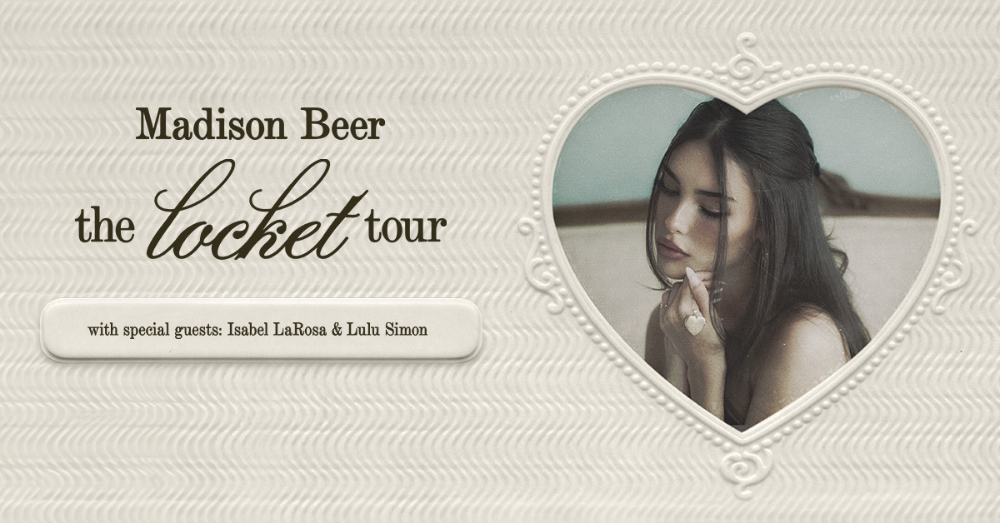
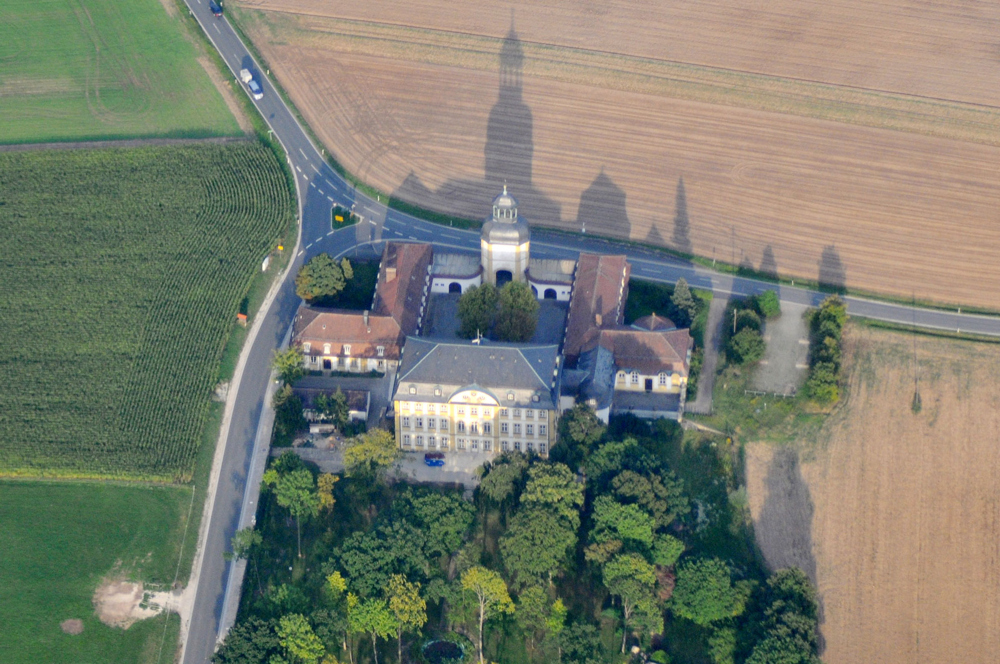
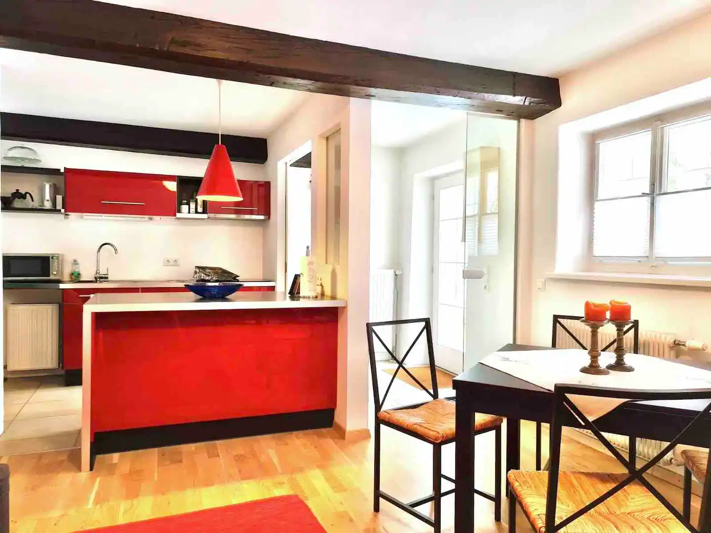

14. May - Thursday
Extra charges to watch: the Slovenian hybrid already has the Slovenian vignette, so the main road charges are Austria motorway vignette plus separate tunnel tolls: expect Karawanken tunnel and likely A10 Tauern/Katschberg tunnel tolls. A normal car has no German motorway toll. You do not need the Munich green Umweltplakette for Zenith / MOC, but you do need it if you drive inside the Mittlerer Ring — including the previous Münchner Freiheit idea. Budget for paid parking in Munich/Salzburg. Check/buy Austrian tolls via ASFINAG before leaving.
Weather note: Munich is cool and showery (~12°/6°) — pack a rain jacket and umbrella in your day bag, not deep in the trunk. The Zenith is fully indoor so the concert itself isn't a problem, but parking, walking to the venue, and the queue can be wet and cold. Warm layer + waterproof shoes.
Drive from home to Munich
Na gmajni 28, Loka pri Mengšu - Zenith, Munich. Approx. 4 h 30 min driving time before traffic or fuel. Leave home with a full tank of regular 95 / E10; the Jeep Renegade 4xe has a small ~36 L petrol tank, so plan fuel conservatively rather than stretching it. Because Thursday, 14 May is Ascension Day in Germany and Austria, treat it like long-weekend traffic and leave in the morning. Recommended: 09:00. Latest comfortable leave: 10:00.
Fuel + stretch stop before Germany
Make this a planned stop, not an emergency one. Best practical target: OMV Tankstelle Mondsee, Steinerbach 1, 5310 Mondsee right off the A1, or Shell Salzburg-Alpenstraße 86, 5020 Salzburg before the final run into Munich. It is not as cheap as Slovenia, but it avoids arriving in Munich on a low tank; skip German Autobahn fuel unless you have no choice.
Arrive in Munich
Stay outside the low-emission zone and park near the venue: MOC Veranstaltungscenter, Lilienthalallee 40 or P+R Kieferngarten. For food nearby, aim for Restaurant Mykonos (Greek, dinner from about 17:00) or Arena Treff (pub-style food, also opens around 17:00). If you arrive early, do coffee/walk around Kieferngarten first, then eat and head to Zenith. No Munich green sticker needed if you stay in this Freimann/Kieferngarten area.
Before parking for the night, check the gauge. If under half a tank, do a small top-up at Aral Heidemannstraße 70, 80939 München (Freimann) or Shell Frankfurter Ring 81, 80807 München so the late drive to Heroldsbach is not a fuel problem.
Madison Beer concert
Ticketmaster event / tickets at Zenith, Munich. Ticketed start 19:30. Madison's set is about 1 h 20 min, but the Europe/UK shows also have support, so assume Madison starts closer to 20:30-20:45 and the night wraps around 21:50-22:15.

Drive to the cabin after the concert
Zenith, Munich - Am Herrengarten 3, Heroldsbach. Approx. 2 h 15 min. Leave Munich with at least half a tank.
If you ignored the Munich top-up and the gauge is low, use the 24 h Aral Tankstelle, Münchener Straße 99, 85051 Ingolstadt (A9 exit) rather than gambling on the last hour.
Arrive and self check-in
The host confirmed late arrival is fine. Lockbox is at the cabin entrance; code is in the accommodation details below.
Accommodation: Peaceful log cabin in Heroldsbach
- Arrival questions: host phone numbers: 09190 998844 and 0174 7421170.
- Arrival: host confirmed you can arrive anytime; no need to rush after Munich. Self check-in via lockbox.
- Key box: at the cabin entrance door. Code: 2481.
- Parking: park to the right of the garage, without blocking garage access. The cabin is behind the garage, through the garden.
- Useful nearby: Netto is 700 m away; Bäckerei Ludwig Ort is 650 m away; EDEKA Saam and Bäckerei Fuchs are 2.4 km away.
- Checkout: wash used dishes, close windows, lock doors, switch off lights, unplug electrical devices, leave trash bags in their bins, hang used towels on bathroom hooks, and do a final item check.
- Key return: hand the key back personally if possible. If nobody is home or you leave before 8 am, put it back in the lockbox or into the main-house mailbox.
- House rules: no pets, no smoking, no open flames, no parties/events, quiet hours 10 pm - 8 am.


15. May - Friday
Wedding day at Schloss Jägersburg in Eggolsheim — a small Baroque hunting castle with a chapel, gardens, and a brewery. About a 15-minute drive from the Heroldsbach cabin.
Weather note: forecast is cool and rainy — about 14°/5°C. The ceremony is indoors (chapel), but the drinks reception is outside and Kat & Gil's photo session is on the grounds. Bring a small umbrella you can stash, a warm layer under the blazer / wrap for the dress, and closed shoes — heels and gravel are bad enough dry, worse damp. The castle has hard floors so wet shoes will be noticed.



Breakfast / shop run in Heroldsbach
Walk or quick drive to Bäckerei Ludwig Ort (Hausener Str. 1) for fresh Bavarian breads, pretzels, and pastries — about 650 m from the cabin, open Fri 05:00-18:00. For coffee, juice, fruit, snacks, and anything bigger, the nearest Lidl is in Hausen (Pilatus Campus 6) — about 3 km / 5 min drive. Aldi Süd is a bit further, in Baiersdorf or Forchheim. Eat a proper breakfast — Kaffee und Kuchen isn't until late afternoon and dinner is even later.
Get ready and head out from the cabin
Aim to leave the cabin no later than 13:00. Dress code: garden formal — blazer with tailored trousers, tie optional. With rain forecast and 5°C overnight, definitely a warm layer underneath, an umbrella in the car, and closed shoes that handle damp grounds.
Drive to Schloss Jägersburg
Heroldsbach - Schloss Jägersburg, Eggolsheim. About 15 min on country roads. Parking is on-site; follow signs near the castle gate.
Arrive, park, find the chapel
Aim to be seated by 1:40 pm. Germans are serious about timekeeping — late arrivals will be noticed. Use the buffer to greet people, pick up the English service booklet, and find a seat.
Ceremony in the castle chapel
Symbolic Catholic-style ceremony, mostly in German, with an English service booklet to follow along. Expect roughly 45-60 min.
Drinks reception
Sekt and welcome drinks right outside the chapel — if it's raining, expect this to move under cover or into one of the castle rooms. Kat and Gil step away for photos; guests can wander the grounds (umbrella!), explore the castle, or join an informal tour.
Kaffee und Kuchen
Coffee plus a homemade cake buffet — a Bavarian wedding tradition. Plenty of variety; pace yourself for dinner later.
Dinner
Seated dinner with a seating plan. Check the chart near the entrance to the dining room.
Toasts, drinks, and dancing
Expect German party music plus international songs; both ballroom-style and casual dancing are welcome. Parties often run well past midnight — leave whenever you are ready.
Drive back to the Heroldsbach cabin
Schloss Jägersburg - cabin. Same ~15 min back. If anyone has been drinking: designate a sober driver, or use a ride app — in Germany Uber routes to licensed taxis, and Germany-wide taxi apps like FREE NOW, taxi.eu, or Taxi Deutschland work in smaller towns too (see the Q&A on the wedding website). Download one before the trip; book earlier in the evening since late-night rural availability is thinner.
16. May - Saturday
Day after the wedding. Sleep in, eat properly, then a half-day in Nuremberg — old town, the Imperial Castle, and a plate of Nürnberger Rostbratwürste. Heroldsbach is ~35 min from the Altstadt, so this is easy to do at half-speed.
Weather note: cloudy with light rain, ~13°/7°. Rain jacket + small umbrella. Most of this plan tolerates rain well — the Bratwurst spots, Lebkuchen cafés, and the Kaiserburg interior rooms are indoor. If it really pours, drop the Altstadt loop and spend more time inside the castle palas and Albrecht-Dürer-Haus. Cobbles get slippery; flat-soled shoes.
Late breakfast at the cabin
Leftover bakery from Friday morning, coffee, slow start. If you need fresh pastries, Bäckerei Ludwig Ort is open Sat 05:00-12:00 — don't miss the cutoff.
Drive Heroldsbach → Nuremberg
Heroldsbach - Nuremberg Altstadt. About 35-45 min, mostly on the A73. Park at Tiefgarage Hauptmarkt or Parkhaus Adlerstraße — both put you a few minutes' walk from the main sights.
Lunch: Nürnberger Rostbratwürste
The classic: small finger-sized sausages, grilled over beechwood, six or eight on a pewter plate with sauerkraut and mustard. Try Bratwursthäusle bei St. Sebald next to the Sebalduskirche, or Bratwurst Röslein (huge, more touristy but reliable).
Walk the Altstadt
Loop: Hauptmarkt with the Schöner Brunnen and the Frauenkirche, then up through narrow lanes past the Albrecht-Dürer-Haus to the castle. Plenty of half-timbered houses and bridge views along the Pegnitz on the way back.
Kaiserburg (Imperial Castle)
Kaiserburg Nürnberg sits on the hill at the north edge of the Altstadt. Combined ticket gets you the Palas, Deep Well, and Sinwell Tower — plus the best views of Nuremberg's rooftops. Allow ~1 h.
Coffee & Lebkuchen
Drop into a café for a coffee and a Nürnberger Elisenlebkuchen — the original gingerbread, available year-round. Lebkuchen-Schmidt has shops in the Altstadt; cafés around the Hauptmarkt do them with hot drinks.
Drive back to the cabin
Nuremberg - Heroldsbach cabin. Same ~40 min.
Easy evening at the cabin
Light dinner from the Lidl/Bäckerei haul or order in. Pack what you can tonight so the Sunday checkout is painless.
17. May - Sunday
Travel day to Salzburg. Easy morning, checkout from Heroldsbach, then drive south for two nights at Schloss Rauchenbichl — a small castle apartment with garden and parking, hosted by Andrea.
Weather note: rainy and cold day (~12°/3°). The drive is the main weather concern — wet motorway in the Alpine foothills, plus possible low cloud near the Tauern. Build in extra buffer time, headlights on, easy following distance. The evening Altstadt wander will be drizzly; a cozy beer-hall dinner is the right call over anything outdoors. Salzburg can hit 3°C overnight — pack a real coat.
Slow breakfast and pack
Pack up the Heroldsbach cabin. Coffee, leftovers, finish anything in the fridge that won't survive a 4-hour drive.
Checkout from Heroldsbach cabin
Wash used dishes, close windows, lock doors, switch off lights, unplug electrical devices, leave trash bags in their bins, hang used towels on bathroom hooks. Hand the key back personally if possible — otherwise back in the lockbox or main-house mailbox.
Fuel before the Salzburg drive
Top up before joining the long motorway run south. Best targets: Aral Tankstelle, Bamberger Straße 38, 91301 Forchheim or the Autohof Eggolsheim, Zur Autobahn 1, 91330 Eggolsheim right at the A73 exit. German fuel is usually pricier than Austria/Slovenia, but this is the safety stop that keeps the 4 h drive simple. Avoid Autobahn Raststätte prices if you can.
Drive Heroldsbach → Salzburg
Heroldsbach - Linzer Bundesstraße 1, Salzburg. Approx. 4 h via the A9 / A8. You'll need an Austrian motorway vignette as soon as you cross into Austria.
Check-in at Schloss Rauchenbichl
Check-in window is 16:00 - 20:00, host greets in person. If you'll be later than 20:00, message Andrea in advance — late check-in is +€25. Salzburg city guest registration is already filed; ask Andrea for the guest cards on arrival (free public transport).
Accommodation: Schloss Rauchenbichl — Castle with private garden & parking
- Check-in: host greets you in person. Window is 16:00-20:00.
- Late arrival: after 20:00 is possible with prior agreement, +€25. Late checkout after 11:00 is +€100 and must be requested in advance.
- Salzburg guest registration: already submitted via the Deskline portal. Guest cards requested — Andrea will hand them over on arrival; they cover free public transport.
- Wifi & access: details are sent by Andrea ~48 h before check-in.
- Parking: own parking at the castle. The green iron gate opens via a grey button on its right side — same button to open it on the way out at checkout.
- House rules: 4 guests max, no pets, no parties or events, no smoking, no commercial photography. The pool in the garden is not available, and the area behind the building is private.
- Checkout: leave the apartment keys on the kitchen counter, close the apartment door behind you, press the grey button on the right side of the green iron gate to drive out.
- Cancellation: non-refundable.





Settle in and first wander
Drop bags, then bus or walk into the Altstadt (~15 min by bus, longer on foot) for a first look at the old town — Getreidegasse, the Residenzplatz, the river. Easy evening; you've had a long day.
Dinner in the old town
Pick a Wirtshaus or beer garden — Augustiner Bräu Mülln if you want the classic monastery beer hall, or somewhere on the Steingasse / Linzer Gasse side for something quieter.
18. May - Monday
Checkout at 11 AM, then leave the car in a central garage and properly explore Salzburg before driving home in the late afternoon. The drive south is only ~3 h 15 min so there's plenty of day for the Altstadt, the Festung, and one last coffee.
Weather note: the one good day of the trip — milder and mostly dry, ~18°/1°. This is the day to do the outdoor stuff: the Festung Hohensalzburg terrace and the views from the Mönchsberg are the payoff. Mornings will still be chilly (single digits), so warm layer to start, peel down through the afternoon.
Slow breakfast and pack
Pack the car, tidy the apartment. Keys stay on the kitchen counter; close the door behind you. Use the grey button on the right side of the green iron gate to drive out.
Checkout from Schloss Rauchenbichl
Hard deadline — late checkout is +€100 and only by prior agreement. Hand back the guest cards if Andrea wants them.
Park near the Altstadt
Drive to Altstadtgarage (inside the Mönchsberg, the most central option — daily cap around €20) or Mirabell-Congress garage on the other side of the river. ~10 min drive from Linzer Bundesstraße. Take whatever you need for the day from the car.
Walk the Altstadt
Out of the garage you're a few minutes from the Getreidegasse with its wrought-iron signs, Mozart's birthplace, Residenzplatz, the Dom, and the cathedral square. Wander; you won't go far wrong.
Lunch
Quick option: a pretzel and Käsekrainer from a kiosk on Universitätsplatz. Sit-down: Augustiner Bräu Mülln (beer hall + biergarten, ~15 min walk) or St. Peter Stiftskulinarium in the Altstadt itself.
Festung Hohensalzburg
Take the Festungsbahn funicular up to the fortress for the views over the city and Alps. Allow ~1 h 30. If guest cards are still active they include the ride and entry.
Coffee & Mozartkugel
Last stop: a Mozartkugel from the original Café Fürst, or a slice of cake at Café Tomaselli. Then back to the garage.
Drive Salzburg → home
Altstadtgarage - Loka pri Mengšu. Approx. 3 h 15 min via A10 / Tauern tunnel. Austrian vignette + separate Tauern toll.
Gauge check before leaving Salzburg. With half a tank, skip Austrian fuel and fill later in Slovenia. Below half, do a safety top-up at OMV Salzburg-Alpenstraße 48, 5020 Salzburg before the A10, rather than entering the tunnel section low.
Arrive home
Trip done. Unload, feed the cats (in spirit), and rest.